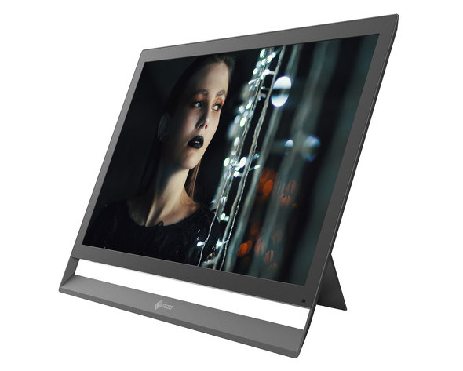

OLED: organic light-emitting materials
In 1987, Ching W. Tang and Steven A. VanSlyke reported an efficient organic electroluminescent diode, an important step toward modern OLED devices. OLED panels use organic materials that emit light when electrically driven. They need no separate backlight. Pixels can switch off in dark areas, giving deep blacks and high contrast. OLED technology now appears in phones, televisions and computer displays.

Benefits and trade-offs
Removing the backlight enables thin designs, and some implementations use flexible substrates. Fast pixel response helps moving images. However, prolonged static content can contribute to permanent image retention, or burn-in. Brightness, lifetime and power use depend on the particular panel and displayed content, so OLED does not improve every characteristic equally.
Direct-view LED and display quality
Direct-view LED uses LEDs as visible picture elements rather than as a backlight behind LCD. Modular systems can form large displays for venues and signage. Pixel pitch, the spacing between pixels, affects suitable viewing distance. MicroLED extends the use of very small inorganic emitters. Resolution, pixel density, refresh rate and HDR describe other aspects of image quality. Apple's Retina naming is a product example, not a separate image-forming technology alongside OLED.
| Display | How it forms the picture |
|---|---|
| LCD with LED backlight | Liquid crystals control light from a separate LED backlight. |
| OLED | Organic light-emitting materials produce light in the pixels. |
| Direct-view LED | LEDs form the visible picture elements themselves. |